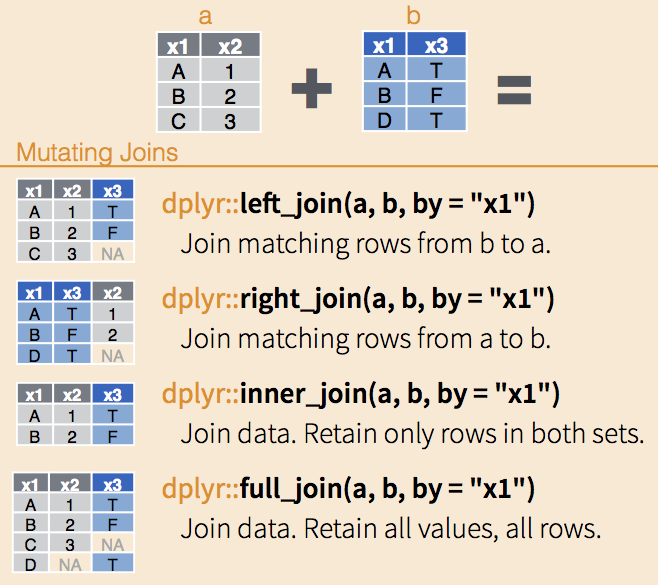

Unidad 3 dplyr
En la unidad previa caracterizamos un hogar censal. En esta unidad trabajaremos la base de datos censal, con todas sus viviendas, hogares y personas. Para esto recorreremos algunos paquetes de tidyverse, cuyo fin es generar un entorno integrado de herramientas de análisis de datos.
El paquete dplyr contiene las operaciones más comunes sobre una tabla de datos.

Una de sus ventajas es el uso del pipe %>%, que concatena operaciones sobre el mismo objeto, verbalizando el proceso, generando fluidez en nuestro razonamiento y mejor entendimiento para un tercero. En vez de f(x) se tiene x %>% f():
Previo a comenzar debes haber leído “C2010_CABA.csv” (con separador “,”), haberla inspeccionado brevemente y haberla guardado en un objeto llamado caba2010_br (ver documento “Unidad_2_lectura.html”).
3.1 seleccionar (select), renombrar (rename)
Empecemos a trabajar la base de datos censal. Para este ejercicio nos interesa contar con la variable geográfica sobre el departamento de CABA al que pertence la vivienda, las variables de identificación de las unidades de análisis, y algunos atributos en función del cuestionario. Quedémonos con estas variables mediante la función select:
Podemos realizar la misma operación de la mano de %>%, no necesitando especificar el objeto como argumento:
caba2010 <- caba2010_br %>% select(IDDPTO, VIVIENDA_ID, V01, HOGAR_ID,
PERSONA_ID, P01, P02, P03, P05)
# léase: toma el objeto *** y selecciona las columnas ***Si quisiéramos quedarnos solo con las variables de persona podríamos usar starts_with("P") dentro de select (o también P01:P05, ¡probalo!), y muchas más funcionalidades útiles para tablas con muchas columnas.
Nótese que estamos pisando el mismo objeto. Luego podemos renombrar algunas variables para hacer su uso más fluido, mediante rename:
# NuevoNombre = ViejoNombre
caba2010 <- caba2010 %>% rename(Tipo_Viv = V01, Rel_Par = P01, Sexo = P02, Edad = P03, nativo = P05)
# Tambien por posiciónHabrás notado una de sus ventajas: la referencia al nombre de las variables no requiere $ ni “[,]” como en R Base. Podemos condensar lo anterior y hacerlo todo en un paso utilizando %>%. Implica algo super útil: un nuevo %>% supone el objeto ya modificado.
caba2010 <- caba2010_br %>%
rename(Tipo_Viv = V01, Rel_Par = P01, Sexo = P02, Edad = P03, nativo = P05) %>%
select(IDDPTO, VIVIENDA_ID, HOGAR_ID, PERSONA_ID,
Tipo_Viv, Rel_Par, Sexo, Edad, nativo)¿Lo que estamos generando es un data.frame? ¿Qué es un tibble?
3.1.0.1 Actividad
a1. Crear un data.frame llamado “caba2010_a1” que contenga solo las variables identificatorias de “caba2010_br” (que tienen un “ID”).
a2. Renombrar las variables de manera que siempre comiencen con “ID_”.
a3. Contar la cantidad de columnas mediante ncol() y corrobar que la cantidad de variables sea menor a las de “caba2010_br”.
3.2 resumir (summarise) por grupos (group_by)
Como analistas nos interesa calcular medidas resumen para poder obtener conclusiones, plantear hipótesis o simplemente conocer más el fenómeno relevado/registrado en los datos. Si quisiéramos saber cuántas personas existen en nuestra base de CABA podemos realizar un summarise (resumen) de los datos mediante la función n() (contar filas):
Para contar cuántas viviendas fueron relevadas en la base debemos considerar casos con valor distinto en la variable de código de vivienda VIVIENDA_ID:
¿Cuál es el promedio de personas por vivienda?
Cóctel propio
¿De qué forma podríamos hacer lo anterior en R base (nrow, ncol, unique)? La experiencia de usuario de cada uno define el mix de herramientas que le es más cómodo/útil según la complejidad de cada tarea.
Con summarise podemos aplicar cualquier función resumen sobre los datos. Por ejemplo: ¿Cual es la edad promedio de las personas? ¿Cual es la edad máxima reportada?
¿Podemos incluir todo lo anterior en una sola sentencia? ¡Esa es la magia de %>%!
caba2010 %>%
summarise(n_personas = n(),
n_viviendas = n_distinct(VIVIENDA_ID),
n_hogares = n_distinct(HOGAR_ID),
pers_x_viv = n_personas/n_viviendas,
pers_x_hog = n_personas/n_hogares,
hog_x_viv = n_hogares/n_viviendas,
edad_media = mean(Edad),
edad_max = max(Edad)
)Las operaciones principales que podemos realizar mediante summarise las podés ver acá.Pero su utilidad se potencia cuando queremos resumir una variable segmentando por grupos. Esta agrupación antecede a summarise, y requiere ser indicada con group_by, incluyendo como argumento las variables de agrupación. Por ejemplo, para conocer la cantidad de personas y viviendas relevadas por Departamento (Comuna):
pers_viv_dpto <- caba2010 %>%
group_by(IDDPTO) %>%
summarise(n_personas = n(),
n_viviendas = n_distinct(VIVIENDA_ID))Seguro estas cantidades difieren según código de tipo de vivienda. Pero primero podemos agregar la variable que describe los códigos. Carguemos como objeto el diccionario e incorporémoslo:
cod_tipo_viv <- data.frame(Tipo_Viv = 1:10,
Tipo_Viv_descripc = c("Casa",
"Rancho",
"Casilla",
"Departamento",
"Pieza en inquilinato",
"Pieza en hotel familiar o pensión",
"Local no construido para habitación",
"Vivienda móvil",
"Persona/s viviendo en la calle",
"Sin Dato"))
caba2010 <- caba2010 %>% left_join(cod_tipo_viv, by = "Tipo_Viv")
Joins!!!
dplyr tiene las funciones típicas de join para el pareo de data.frames dependiendo la relación que desiemos. Ver más aquí.

Ahora sí, obtegamos el promedio de personas por vivienda según tipo:
pers_tipoviv_dpto <- caba2010 %>%
group_by(IDDPTO, Tipo_Viv_descripc) %>%
summarise(n_personas = n(),
n_viviendas = n_distinct(VIVIENDA_ID),
pers_viv = n_personas/n_viviendas)Es un data.frame grande. A veces queremos mirar la tabla: View(tabla)
3.3 transformar (mutate), filtrar (filter), ordenar (arrange)
Mediante mutate podemos crear variables nuevas que pueden o no relacionarse a las existentes. Tomando la tabla pers_viv_dpto (sin distinguir tipo de vivienda), podemos calcular el ratio de personas por vivienda segun departamento ratioPV:
# a que base nos referimos
head(pers_viv_dpto)
# creo una variable (sin resumir como en summarise)
pers_viv_dpto <- pers_viv_dpto %>% mutate(ratioPV = n_personas / n_viviendas)
# Nos avisan desde INDEC que hay una hipótesis a corroborar de subenumeración de personas del 2% y de viviendas del 1%. Calculemos un indicador alternativo bajo esa hipótesis:
pers_viv_dpto <- pers_viv_dpto %>% mutate(ratioPV_altern = n_personas * 1.02 / n_viviendas * 1.01) Para conocer qué departamentos poseen mayor promedio, podemos ordernar la tabla mediante arrange:
pers_viv_dpto <- pers_viv_dpto %>% arrange(ratioPV)
# mejor al revés: descendente
pers_viv_dpto <- pers_viv_dpto %>% arrange(desc(ratioPV))Si solo querés mostrar los tres departamentos con mayor valor, podés utilizar slice para seleccionar filas (una vez ordenado):
También puedes filtrar la base a un subconjunto del universo que cumpla determinadas condiciones utilizando filter. Por ejemplo, si quisiéramos conocer el indicador solo para las comunas al sur:

comunas_al_sur <- c(8,4)
pers_viv_dpto %>% filter(IDDPTO %in% comunas_al_sur) # Operador lógico! (¿te acordás?)Vayamos hacia algo un poquito más complejo. Si quiero obtener la misma tabla anterior pero solo para viviendas que sean casas, casillas, ranchos o departamentos (códigos 1 a 4, viviendas individuales más frecuentes), y que no sean hogares no unipersonales.
Comencemos por crear el data.frame con ese listado:
# busco un listado de hogares que cumplan ambas condiciones:
hogares_NoUnipersonales <- caba2010 %>%
filter(Tipo_Viv<5) %>%
group_by(HOGAR_ID) %>%
summarise(n_personas = n()) %>%
filter(n_personas>1) %>%
select(HOGAR_ID)
# incluimos las tres unidades de análisis en una sentenciaAhora calculemos el indicador filtrando aquellos hogares obtenidos anteriormente. ¿Los resultados son razonables?
PersVivNoUnip_Dpto <- caba2010 %>%
filter(HOGAR_ID %in% hogares_NoUnipersonales$HOGAR_ID) %>%
group_by(IDDPTO) %>%
summarise(ratioPV = n() / n_distinct(VIVIENDA_ID)) %>%
arrange(desc(ratioPV)) %>%
slice(1:3)Si tuviéramos que relatar lo que estamos haciendo, sería algo del tipo: “toma CABA2010, filtralo, agrupalo y calcula por cada grupo el indicador (creando la variable); finalmente selecciona qué quieres mostrar”. Es una ¡composición de funciones!.
Otra operación común es la de calcular distribuciones en una variable, segmentando con determinada agrupación. Podemos ver el porcentaje de mujeres dentro de cada departamento. Considerar que cualquier operación resumen (media, suma, contar) en un data.frame agrupado resumirá por grupos. Aprovechemos eso:
Porc_mujeres <- caba2010 %>%
group_by(IDDPTO, Sexo) %>%
summarise(N = n()) %>%
mutate(porcM = N/sum(N) * 100) %>% # sum() es por grupos tambien!
filter(Sexo == "MUJER") %>%
select(IDDPTO, porcM)En el caso de que querramos la distribución por grandes grupos de edad, podemos recodificar la edad con la función case_when en una nueva variable.
distr_edadGG <- caba2010 %>%
mutate(Edad_GG = case_when(
Edad < 15 ~ "0-14",
Edad >= 15 & Edad < 65 ~ "15-64",
TRUE ~ "65+")) %>%
group_by(IDDPTO, Edad_GG) %>%
summarise(N = n()) %>%
mutate(GG = N/sum(N)*100) %>%
select(IDDPTO, Edad_GG, GG)Otras opciones de recodificación son ifelse la opción base de R y recode.
3.3.0.1 Actividad
b1. Crea un nuevo objeto con el nombre que desees a partir de CABA2010_br seleccionando y renombrando solo variables relacionadas a atributos de personas (a tu gusto el nuevo nombre).
b2. Ordénala de la siguiente manera: ascendente ID de departamento y decreciente en la edad.
b3. El hogar identificado como 705 no debería ser incluido en la base. Removerlo utilizando filter.
b4. La variable nativo debería ser 0 (nativo) y 1 (no nativo). Sabiendo que en CABA había mas nativos que no nativos en 2010, inferir a que corresponde cada código y recodificar la variable manteniendo el tipo numerico/entero.
b5. Filtra por aquellas Comunas costeras.
b6. Mediante la función mean obtén el promedio de edad de estas comunas, mostrando el resultado según las más envejecidas primero.
b7. Realiza todo lo anterior en una sola sentencia.
b7. En una sola sentencia obtén la edad mediana por tipo de vivienda. ¿qué ves de interesante?
b8. Obten el promedio de edad de las personas mayores a 64 años cumplidos, según departamento y sexo. Puedes utilizar algo muuuy útil: filtros dentro del argumento de summarise –> summarise(edad_media_65mas = mean(Edad[Edad>64])).
b10. Identifica (toma el ID de) un hogar cualquiera con 5 miembros. Puedes usar slice para tomar una observación por el número de la fila.
3.3.1 Recursos adicionales
r4ds. Una biblia que debés llevar bajo el brazo.
dplyr: web del paquete.
Hoja de ayuda (o “cheat sheet”).